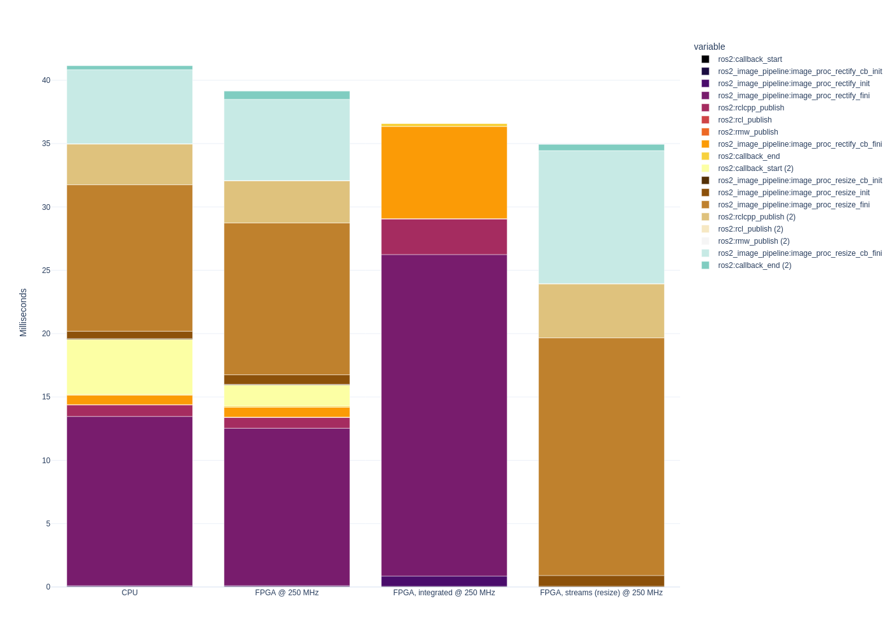

KRSのファームウェアを用意する の続き。 2022年9月時点の最新のacceleration_firmware_kv260 ではROS2からLTTngを使用することができない。 ということでLTTngを使用できる環境を構築して、 サンプルプログラム を計測する。
動作環境
- OS : Ubuntu 20.04.3 LTS（64 bit）
- Vivado : 2022.1
- Vitis : 2022.1
- Vitis_HLS : 2022.1
- ROS2 : Humble
- ボード : Kria KV260
Kria KV260の環境構築
pip で必要なパッケージをインストールする。
python3 -m pip install pytk tk-tools wasabi pandas bokeh
python3-tk は dnf ではインストールできない。 また、 KRSのファームウェアを用意する にも記載した通り、PetaLinuxイメージに含めることもできなかった。 そのため、以下の手順でソースビルド・インストールする。
wget https://github.com/python/cpython/archive/refs/tags/v3.9.9.tar.gz
tar xzvf v3.9.9.tar.gz
cd cpython-3.9.9
./configure --with-tcltk-includes='-I/usr/include -I/usr/include/tcl8.6' --with-tcltk-libs='-L/usr/lib'
make -j
sudo make install
同様に babeltrace2 も以下の手順でソースビルド・インストールする。
wget https://salsa.debian.org/debian/babeltrace2/-/archive/debian/2.0.4-1/babeltrace2-debian-2.0.4-1.tar.gz
tar xzvf babeltrace2-debian-2.0.4-1.tar.gz
cd babeltrace2-debian-2.0.4-1
./configure --enable-python-bindings
make -j
sudo make install
同様に lttng 関連のパッケージも以下の手順でソースビルド・インストールする。
wget https://salsa.debian.org/debian/ltt-control/-/archive/debian/2.13.7-1/ltt-control-debian-2.13.7-1.tar.gz
tar xzvf ltt-control-debian-2.13.7-1.tar.gz
cd ltt-control-debian-2.13.7-1
./configure --enable-python-bindings --disable-man-pages
autoreconf -f -i
make -j
sudo make install
sudo ldconfig
必要かはわかっていないが、 Getting started with ROS 2 tracing に記載されている通りに tracing グループにユーザーを追加する。
sudo groupadd --system tracing
sudo gpasswd -a petalinux tracing
PAC を配置する。
sudo mkdir -p /lib/firmware/xilinx/image_proc_integrated
sudo cp \
/krs_ws/lib/image_proc/shell.json \
/krs_ws/lib/image_proc/image_proc_integrated* \
/lib/firmware/xilinx/image_proc_integrated/
sudo mkdir -p /lib/firmware/xilinx/image_proc_streamlined
sudo cp \
/krs_ws/lib/image_proc/shell.json \
/krs_ws/lib/image_proc/image_proc_streamlined* \
/lib/firmware/xilinx/image_proc_streamlined/
実行手順
root でコンフィギュレーションコードをロードする。 ros2 acceleration select で選択する項目は必要に応じて変更する。
sudo su
source /opt/ros/humble/setup.bash
source /krs_ws/local_setup.bash
export PYTHONPATH=/usr/local/lib/python3.9/site-packages:$PYTHONPATH
export PYTHONPATH=$HOME/.local/lib/python3.9/site-packages:$PYTHONPATH
export LD_LIBRARY_PATH=/usr/local/lib:$LD_LIBRARY_PATH
ros2 acceleration stop
ros2 acceleration start
ros2 acceleration list
ros2 acceleration select image_proc
# ros2 acceleration select image_proc_integrated
# ros2 acceleration select image_proc_streamlined
ros2 acceleration list
exit
シミュレーション環境を起動する。 CPU負荷が大きいため、Kria KV260ではなく、同一ネットワーク上に接続されたデスクトップマシンで実行されることが望ましい。
source $HOME/output/krs_ws/install/setup.bash
ros2 launch perception_2nodes simulation.launch.py
Kria KV260上でROS2 launchを起動する。 選択するlaunchファイルは必要に応じて変更する。
source /opt/ros/humble/setup.bash
source /krs_ws/local_setup.bash
export PYTHONPATH=/usr/local/lib/python3.9/site-packages:$PYTHONPATH
export PYTHONPATH=$HOME/.local/lib/python3.9/site-packages:$PYTHONPATH
export PYTHONPATH=/krs_ws/lib/python3.10/site-packages:$PYTHONPATH
export PYTHONPATH=/usr/lib/python3.9/site-packages:$PYTHONPATH
export LD_LIBRARY_PATH=/usr/local/lib:$LD_LIBRARY_PATH
ros2 launch perception_2nodes trace_rectify_resize.launch.py
# ros2 launch perception_2nodes trace_rectify_resize_fpga.launch.py
# ros2 launch perception_2nodes trace_rectify_resize_fpga_integrated.launch.py
# ros2 launch perception_2nodes trace_rectify_resize_fpga_streamlined.launch.py
trace_rectify_resize.launch.py の場合
デスクトップマシン上で、以下のコマンドで rqt_graph を確認した結果を記載する。
source /opt/ros/foxy/setup.bash
ros2 run rqt_graph rqt_graph
Kria KV260上で、出力画像がどのぐらいのフレームレートで配信されているのかを確認する。
ros2 topic hz /resize/resize
Kria KV260上で、以下のコマンドで、トレースされた情報がどのぐらい保存されているのかを確認できる。 ここでは 2 MB以上保存された後にlaunchを終了した。 なお、出力topicのsubscriberがいないと処理が最後まで走らないlaunchもあるため、 ros2 topic hz は実行したままにする。
du -sh $HOME/.ros/tracing/*
trace_rectify_resize_fpga.launch.py の場合
デスクトップマシン上で、以下のコマンドで rqt_graph を確認した結果を記載する。
source /opt/ros/foxy/setup.bash
ros2 run rqt_graph rqt_graph
デスクトップマシン上で、出力画像がどのぐらいのフレームレートで配信されているのかを確認する。
ros2 topic hz /resize
前節と同様にトレース情報を取得してlaunchを終了した。
trace_rectify_resize_fpga_integrated.launch.py の場合
事前にコンフィギュレーションコードは image_proc_integrated をロードする必要がある。
デスクトップマシン上で、以下のコマンドで rqt_graph を確認した結果を記載する。
source /opt/ros/foxy/setup.bash
ros2 run rqt_graph rqt_graph
デスクトップマシン上で、出力画像がどのぐらいのフレームレートで配信されているのかを確認する。
ros2 topic hz /resize
前節と同様にトレース情報を取得してlaunchを終了した。
trace_rectify_resize_fpga_streamlined.launch.py の場合
事前にコンフィギュレーションコードは image_proc_streamlined をロードする必要がある。
デスクトップマシン上で、以下のコマンドで rqt_graph を確認した結果を記載する。
source /opt/ros/foxy/setup.bash
ros2 run rqt_graph rqt_graph
デスクトップマシン上で、出力画像がどのぐらいのフレームレートで配信されているのかを確認する。
ros2 topic hz /resize
ros2 topic hz /image_rect
なお、仕様かわからないが ros2 topic hz /image_rect も実行しておかないと正常に動作しないように見える。 ソースコードを見た感じ、subscriberがいないと処理を中断する実装になっているように見える。
前節と同様にトレース情報を取得してlaunchを終了した。
トレース結果の確認
必要なパッケージをインストールする。
python3 -m pip install plotly kaleido
公式のanalyse_rectify_resize.launch.py を実行することで、トレース結果を確認することができる。 ここで使用するのには冗長なため、 簡略化したanalyse_rectify_resize.launch.py を使用する。 ros2 launch で起動しても良いが、直接実行した方がエラーが出た時に確認しやすいため直接実行する。
python3 analyse_rectify_resize.launch.py
グラフの描画結果が /tmp/benchmarkintegrated_only.png に出力される。 例を以下に示す。
公式 に記載されている結果とは結構違う。 おそらく、公式の手順ではGazeboもKria KV260上で実行しているためだと思われる。
また、無関係な処理の負荷を減らすために rqt_image_view ではなく ros2 topic hz で出力を確認したため、その点が影響した可能性もある。
また、標準出力にmarkdown形式の表が出力される。 例を以下に示す。
| | Accel. Mean | Accel. RMS | Accel. Max | Accel. Min | Mean | RMS | Max | Min |
| --- | --- | --- | --- | --- | --- | --- | --- | --- |
| CPU **baseline** | **24.92** ms (`0.00`%) | **25.42** ms (`0.00`%) | **72.74** ms (`0.00`%) | **19.11** ms (`0.00`%) | **41.15** ms (`0.00`%) | **42.70** ms (`0.00`%) | **94.75** ms (`0.00`%) | **24.42** ms (`0.00`%) |
| FPGA @ 250 MHz | 24.42 ms (`2.02`%) | 24.52 ms (`3.53`%) | 35.70 ms (`50.92`%) | 20.12 ms (:small_red_triangle_down: `5.28`%) | 39.14 ms (`4.88`%) | 40.00 ms (`6.34`%) | 140.05 ms (:small_red_triangle_down: `47.82`%) | 25.99 ms (:small_red_triangle_down: `6.42`%) |
| FPGA, integrated @ 250 MHz | 25.38 ms (:small_red_triangle_down: `1.86`%) | 25.47 ms (:small_red_triangle_down: `0.21`%) | 56.25 ms (`22.66`%) | 20.86 ms (:small_red_triangle_down: `9.14`%) | 36.62 ms (`11.01`%) | 36.86 ms (`13.68`%) | 72.65 ms (`23.32`%) | 24.40 ms (`0.07`%) |
| FPGA, streams (resize) @ 250 MHz | 18.76 ms (`24.73`%) | 19.51 ms (`23.26`%) | 251.54 ms (:small_red_triangle_down: `245.82`%) | 16.23 ms (`15.08`%) | 34.94 ms (`15.09`%) | 35.54 ms (`16.77`%) | 257.97 ms (:small_red_triangle_down: `172.27`%) | 20.34 ms (`16.73`%) |
既知の問題・不明点
本作業を行うと、Kria KV260上で dnf や xmutil を実行した時に ModuleNotFoundError のエラーが出て実行できなくなる。 sudo su でrootアカウントから実行すれば正常に実行できるため、詳細は調査していない。
また、 公式 に記載されている手順ではrectifyとresizeのlaunchを起動する際に use_sim_time を設定していない。 確認したところ False となっていた。 これが適切な状態なのかは判断がついていない。